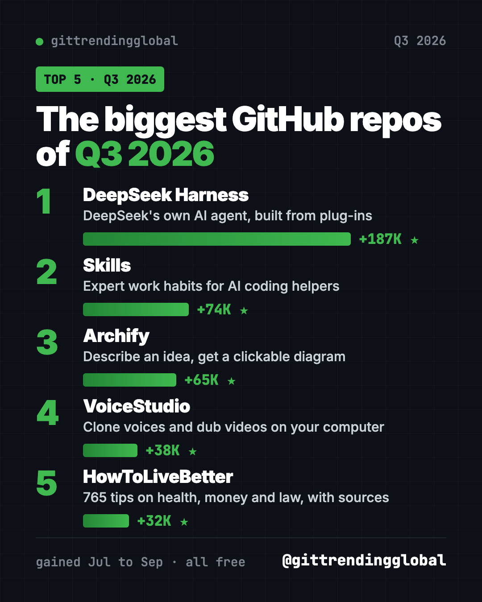
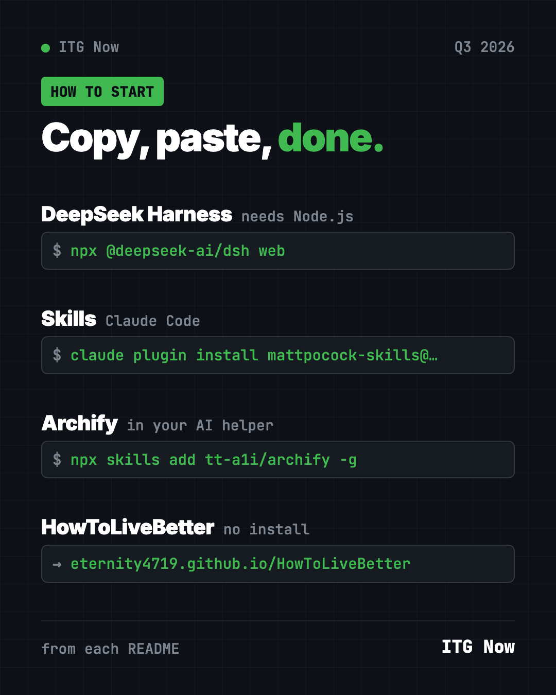
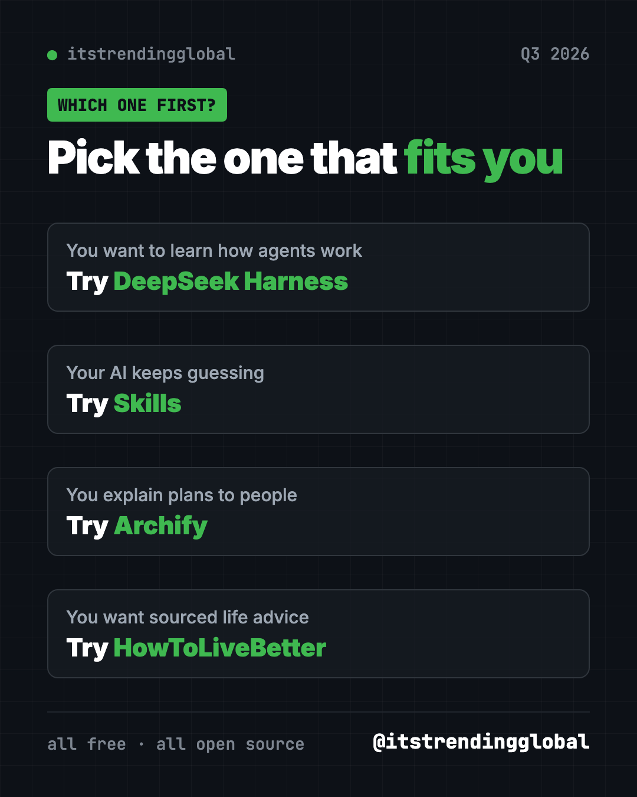

Best GitHub Repos Q3 2026: The 5 Biggest of the Quarter
- Published 15 Oct 2026
- Updated 16 Oct 2026
- 8 min read
- By the ITG Now team
In this guide (8)
The best GitHub repos Q3 2026 produced were DeepSeek Harness, Matt Pocock's Skills, Archify and HowToLiveBetter. Across July, August and September 2026, these free, open-source projects drew the most new GitHub stars. A voice-cloning app also made the quarter's top 5, but we don't cover those, so it only appears in the ranking table.
A GitHub star is like a bookmark or a "like." Q3 was a wild quarter. DeepSeek released its own AI agent and set the pace by a mile. Behind it came a mix: expert habits for AI helpers, clickable diagrams and a sourced guide to living better. For each one you get everyday uses, the setup, and a prompt for your AI helper.
Key takeaways
- DeepSeek Harness was the biggest repo of Q3 2026, with about 187,000 new stars. It is DeepSeek's own AI agent, built from swappable plugins.
- Skills by Matt Pocock gained about 74,000 stars across July and August.
- Archify turns a sentence into a clickable diagram, and gained about 65,000 stars.
- HowToLiveBetter is a free Chinese guide to health, money and law where every tip has a source.

The 5 best GitHub repos of Q3 2026 at a glance
| Rank | Repo | What it does | Stars gained in Q3 | Free? | Platforms |
|---|---|---|---|---|---|
| 1 | DeepSeek Harness | DeepSeek's AI agent, built from plugins | +187K | Yes (MIT), AI model use may cost money | Any computer with Node.js |
| 2 | Skills | Proven work habits for AI coding helpers | +74K | Yes (MIT) | Claude Code, Codex, Copilot, Gemini CLI |
| 3 | Archify | Turns ideas into clickable diagrams | +65K | Yes (MIT) | Cursor, Claude Code, Codex, OpenCode |
| 4 | VoiceStudio | A voice-cloning app. We don't cover voice-cloning tools, so there's no guide here. | +38K | n/a | n/a |
| 5 | HowToLiveBetter | 765 sourced life tips | +32K | Yes (CC BY 4.0) | Web, PDF, EPUB |
How we ranked them: we added up each repo's star gains from the months it made our monthly top 5 (July, August and September). Total star counts below were checked on GitHub on October 16, 2026.
💡 Tip: Some steps use the "terminal," a plain text window where you type commands. On a Mac, open Terminal. On Windows, open PowerShell. Paste a line, press Enter, and wait.
1. DeepSeek Harness: DeepSeek's own AI agent
Stars: +187K in Q3 (+152K August, +35K September) · about 250K total
What it is: DeepSeek Harness, or "dsh," is a free AI agent from DeepSeek AI, the lab behind the DeepSeek models. An agent is an AI helper that takes actions, like reading files and running commands. Its big idea is "everything is a plugin," so every feature can be removed or swapped. You use it through a web page on your own computer. It only went public on August 13, 2026.
Who it's for: Tinkerers, students and developers who want to see how agents work.
How you'd use it:
- Ask for a plain summary of a project folder.
- Have it tidy up a messy folder, approving each step.
- Turn features on and off to learn what each part of an agent does.
Install it: Install Node.js from nodejs.org. Then copy and paste this:
npx @deepseek-ai/dsh web
Connect a model, such as a DeepSeek API key, pick a folder, and give it a task.
Or let Claude or Codex do it: Claude Code and OpenAI Codex are AI helpers that can run setup steps for you. Paste this:
Set up DeepSeek Harness from https://github.com/deepseek-ai/deepseek-harness.
First summarize its SAFETY.md in plain words. Start it with
"npx @deepseek-ai/dsh web" and help me run one safe first task.
⚠️ Heads up: The README calls this a "developer preview" and warns that changes will break things. Read its safety notice first. A DeepSeek API key may cost money.
See DeepSeek Harness on GitHub · Read the full guide
2. Skills: expert work habits for your AI helper
Stars: +74K in Q3 (+40K July, +34K August) · about 293K total
What it is: Coding teacher Matt Pocock shares the skills he uses every day with AI helpers. A skill is a short set of instructions for one kind of job. /grill-me makes the AI question you until your plan is clear. Others help with tests, bug fixing and big plans. It was also a top 5 repo of Q2 2026.
Who it's for: Anyone whose AI helper guesses instead of asking.
How you'd use it:
- Run
/grill-mebefore any new plan, even a trip or a budget. - Use
/teachto learn a new topic over several sessions. - Use
/handoffto sum up a long chat for a fresh session.
Install it: For Claude Code, copy and paste this into your terminal:
claude plugin install mattpocock-skills@claude-plugins-official
Then run /setup-matt-pocock-skills once in your project.
Or let Claude or Codex do it:
Install Matt Pocock's skills from https://github.com/mattpocock/skills
following the README for this agent, then use grill-me on my next idea.
See Skills on GitHub · Read the full guide

3. Archify: describe an idea, get a clickable diagram
Stars: +65K in Q3 (+29K August, +36K September) · about 84K total
What it is: Archify is a free skill for AI helpers that draws interactive diagrams. You describe something in plain words, and your AI builds a diagram you can click, explore and share as one web page.
Who it's for: Teachers, students, managers and anyone who explains plans.
How you'd use it:
- Map a family trip in one clickable picture.
- Make a learning map for a new subject.
- Show your team how a new process works, step by step.
Install it: Copy and paste this:
npx skills add tt-a1i/archify -g
Or let Claude or Codex do it: Once installed, just ask. Here is the README's own example:
Use Archify to diagram a web request: Browser calls the API,
the API checks Redis, and a cache miss queries PostgreSQL and fills the cache.
Swap in your own idea, like "Use Archify to map my 5-day trip to Japan."
See Archify on GitHub · Read the full guide
4. HowToLiveBetter: a sourced guide to health, money and law
Stars: +32K in Q3 (all in September) · about 64K total
What it is: HowToLiveBetter is a free online book, not an app. It holds 765 tips on living longer, first aid, saving money, legal red lines, losing a job, family and starting a business. Each tip says what it costs, what you get back, and how strong the evidence is. It only cites journal papers and official documents. It was created on September 7, 2026, and still made the quarter's top 5.
Who it's for: People who read Chinese and want evidence-based life advice. The legal and social security parts follow mainland China's rules.
How you'd use it:
- Check whether a health habit is worth the money.
- Take the yes-or-no "life self-check" for easy wins.
Install it: No install. Open the online search page and use your browser's translate button if needed.
Or let Claude or Codex do it: The project ships a skill for AI helpers. For Claude Code, copy and paste this:
mkdir -p ~/.claude/skills/life-decision-guide && curl -fsSL -o ~/.claude/skills/life-decision-guide/SKILL.md "https://raw.githubusercontent.com/eternity4719/HowToLiveBetter/main/skills/life-decision-guide/SKILL.md"
Then ask: "Use life-decision-guide to answer in English: is a long commute worth a higher salary?"
Which one should you try first?
- You want to learn how AI agents work: start with DeepSeek Harness.
- Your AI helper keeps guessing: add Skills.
- You explain plans to people: try Archify.
- You want practical, sourced life advice: read HowToLiveBetter. Just a browser.

For the news side of the quarter, read September 2026 in AI. Curious what is hot right now? See the trending GitHub repos of October 2026 so far.
FAQ
What were the best GitHub repos of Q3 2026?
DeepSeek Harness, Matt Pocock's Skills, Archify and HowToLiveBetter, plus a voice-cloning app we don't cover at #4. DeepSeek Harness led with about 187,000 new stars across the quarter.
Why did DeepSeek Harness get so many stars?
It is the official AI agent from DeepSeek, a well-known AI lab, and it launched in August. About 152,000 of its stars came in that first month.
Are these GitHub repos free?
Yes, all four we cover are free and open source. DeepSeek Harness needs an AI model, and paid ones like a DeepSeek API key cost money.
Which one is easiest for beginners?
HowToLiveBetter needs only a browser. Archify is next: one command adds it to your AI helper, then you just describe what you want drawn.
How did you rank the quarter?
We added up the star gains each repo had in our monthly top 5 lists for July, August and September 2026. Gains in months a repo missed the top 5 are not counted.
Keep reading

Trending GitHub Repos October 2026: The Top 5 So Far
The trending GitHub repos of October 2026 so far: a free Photoshop-style editor, an AI art studio, a big AI model for gaming PCs and more, explained.

Trending GitHub Repos This Week, Oct 5 2026: The Top 5
Trending GitHub repos this week Oct 5 2026: Matt Pocock's skills, the openGym workout tracker, e2e testing, HyperFrames video and claude-mem memory.

GitHub Trending September 28, 2026: Hindsight and Paperclip
GitHub trending September 28 2026: Hindsight, Paperclip, NVIDIA's OpenShell and a free 542-lesson AI course, with setup steps for each.